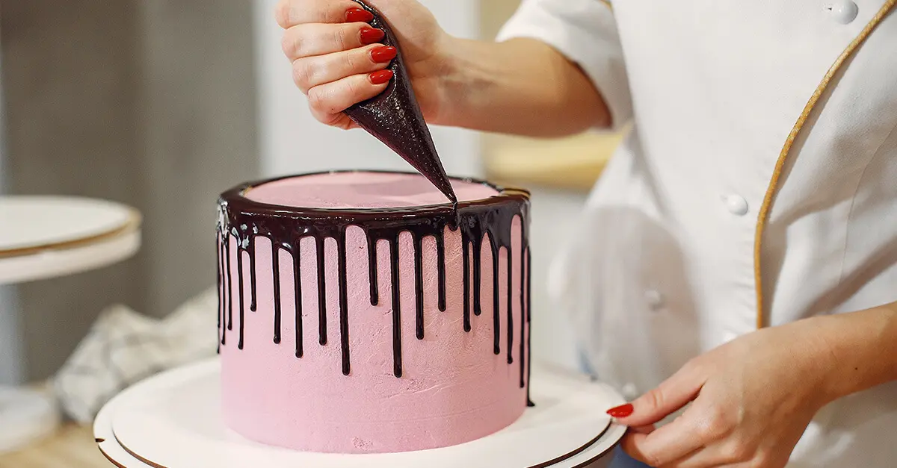
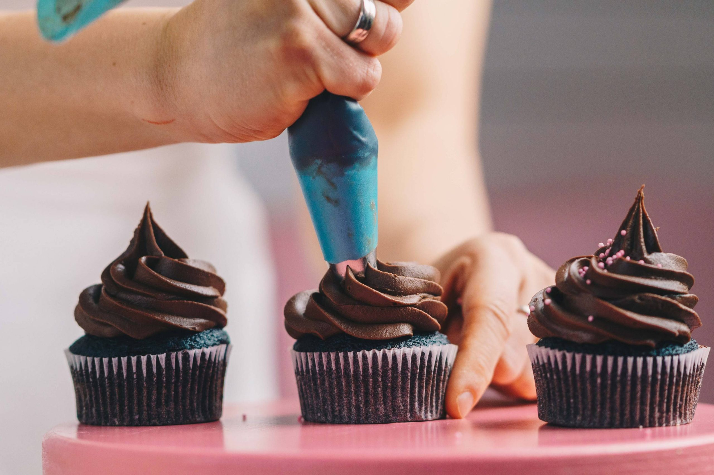
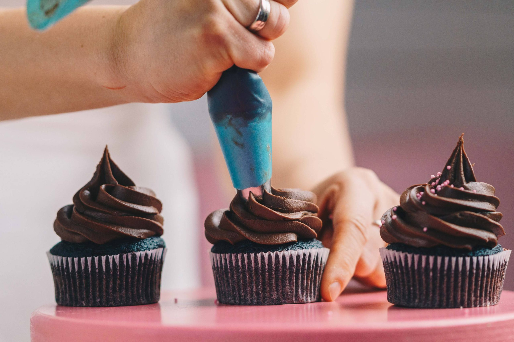

Curso de confeitaria
Nosso curso de confeitaria é uma ótima maneira de começar a aprender as habilidades básicas necessárias para criar deliciosos doces e sobremesas. Aqui está um guia geral sobre o que esperar do nosso curso:
- 1. Introdução à confeitaria: O curso começará com uma visão geral do mundo da confeitaria, incluindo sua história e importância na culinária.
- 2. Equipamentos e utensílios: Você aprenderá sobre os utensílios e equipamentos básicos de confeitaria necessários para criar suas sobremesas, como batedeiras, formas, moldes, e mais.
- 3. Ingredientes: Será ensinado sobre os ingredientes comuns da confeitaria, como farinha, açúcar, ovos, manteiga, fermento, chocolate, extratos, e outros, e como eles são usados em diferentes receitas.
- 4. Técnicas de preparação: Você aprenderá as técnicas básicas de preparação, como medir ingredientes corretamente, misturar, bater, dobrar, sovar e muito mais.
- 5. Receitas básicas: O curso normalmente inclui aulas práticas onde você aprenderá a fazer sobremesas simples, como bolos, cupcakes, cookies, brownies e outros doces populares.
- 6. Decoração: Você também aprenderá técnicas de decoração básicas, incluindo o uso de glacê real, fondant, chocolate derretido e outros métodos de enfeitar suas criações.
- 7. Segurança alimentar: É importante entender as práticas de segurança alimentar ao trabalhar com alimentos, e isso geralmente é coberto em cursos de confeitaria.
- 8. Dicas e truques: Os instrutores compartilharão dicas e truques para garantir que suas sobremesas tenham a melhor textura e sabor possível.
- 9. Degustação: Uma parte divertida do curso é provar suas criações e receber feedback sobre seu trabalho.
- 10. Certificado: Nossos cursos oferecem certificados de conclusão que podem ser úteis se você planeja seguir uma carreira na confeitaria.

 
